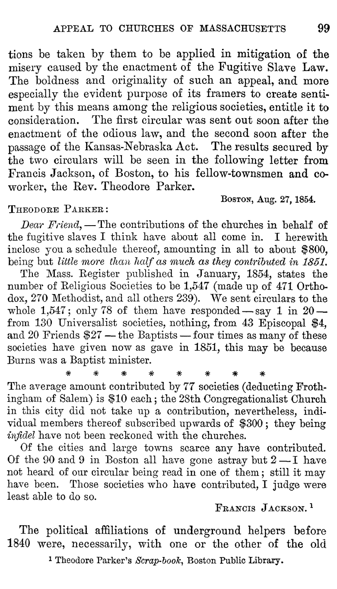

<pb n="99"/>
tions be taken by them to be applied in mitigation of the <lb/>
misery caused by the enactment of the Fugitive Slave Law. <lb/>
The boldness and originality of such an appeal, and more <lb/>
especially the evident purpose of its framers to create senti- <lb/>
ment by this means among the religious societies, entitle it to <lb/>
consideration. The first circular was sent out soon after the <lb/>
enactment of the odious law, and the second soon after the <lb/>
passage of the Kansas-Nebraska Act. The results secured by <lb/>
the two circulars will be seen in the following letter from <lb/>
Francis Jackson, of Boston, to his fellow-townsmen and co- <lb/>
worker, the Rev. Theodore Parker.</p>
<quotedLetter>
<opener>
<dateline>
<name type="place"><smcap>Boston</smcap></name>, <date value="1854-08-27">Aug. 27,1854</date>.
</dateline>
<salute><smcap>Theodore Parker</smcap>:</salute>
</opener>
<p><i>Dear Friend</i>,— The contributions of the churches in behalf of <lb/>
the fugitive slaves I think have about all come in. I herewith <lb/>
inclose you a schedule thereof, amounting in all to about $800, <lb/>
being but <i>little more than half as much as they contributed in 1851</i>.</p>
<p>The Mass. Register published in January, 1854, states the <lb/>
number of Religious Societies to be 1,547 (made up of 471 Ortho- <lb/>
dox, 270 Methodist, and all others 239). We sent circulars to the <lb/>
whole 1,547; only 78 of them have responded— say 1 in 20— <lb/>
from 130 Universalist societies, nothing, from 43 Episcopal $4, <lb/>
and 20 Friends $27— the Baptists— four times as many of these <lb/>
societies have given now as gave in 1851, this may be because <lb/>
Burns was a Baptist minister.</p>
<ornament type="characters">*  *  *  *  *  *  * *</ornament>
<p>The average amount contributed by 77 societies (deducting Froth- <lb/>
ingham of Salem) is $10 each; the 28th Congregationalist Church <lb/>
in this city did not take up a contribution, nevertheless, indi- <lb/>
vidual members thereof subscribed upwards of $300; they being <lb/>
<i>infidel</i> have not been reckoned with the churches.</p>
<p>Of the cities and large towns scarce any have contributed. <lb/>
Of the 90 and 9 in Boston all have gone astray but 2— I have <lb/>
not heard of our circular being read in one of them; still it may <lb/>
have been. Those societies who have contributed, I judge were <lb/>
least able to do so.</p>
<closer>
<signed><smcap>Francis Jackson</smcap>.<ref target="n4.1"><sup>1</sup></ref>
<note id="n4.1" place="foot"><ns><sup>1</sup></ns><p>Theodore Parker's <i>Scrap-book</i>, Boston Public Library.</p></note>
</signed>
</closer>
</quotedLetter>
<p>The political affiliations of underground helpers before <lb/>
1840 were, necessarily, with one or the other of the old <lb/>